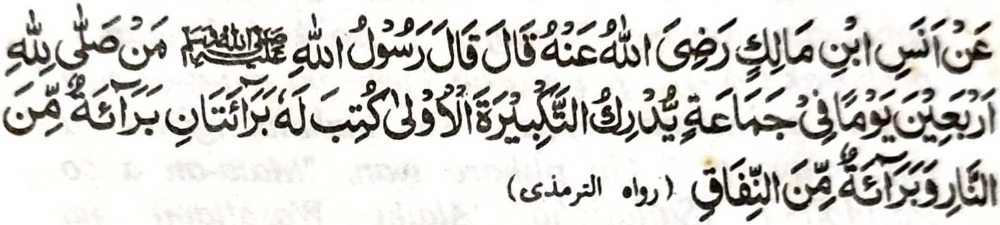

Miyaka thitayan ko Anas bin Malik (Radhiallao 'Anho) a pitharo iyan a pitharo o Rasulollah (Sallallaho 'Alaihi Wasallam), "Sa tao a makazambayang sa Barajoma ko soled o pat polo gawi-i go pera-oten niyan so paganay a takbir o Imam na izorat a bagi-an niyan so dowa a kapakalidas: Phakalidas sekaniyan ko Apoy (ko Naraka) go phakalidas sekaniyan ko kamonafiq."
Opama ka so tao na tatapen niyan so Sambayang (rakhes a Ikhlas) ko soled o pat polo gawi-i go pekhaped ko Barajoma pho-on sa po-onan (ma-ana so masa a tharo-on o Imam so paganay a Takbir), na di sekaniyan den mamonafiq go di sekaniyan phakasoled ko Naraka. So Munafiq na so tao a gi-i manangin a Muslim sekaniyan ogaid na zisi-i ko poso iyan so Kufr. So kapekhasalin o Manosiya (ko kiya-aloy niyan sa Hadith) na si-i ko soled o pat polo gawi-i. Mararani a aden a antap iyan ko kiya-aloy niyan sangka-iya Hadith, go so manga Auliya na tanto iran a bigan sa arga angka-iya kathay a pat polo gawi-i (bebethowan sa basa Urdu sa Chillah) pantag ko kalayama ko ginawa.
Tanto a miyagontong so manga tao a da-a minibagak iran a paganay a Takbir (ko Sambayang a Barajoma) o tenday o phipira-ragon.